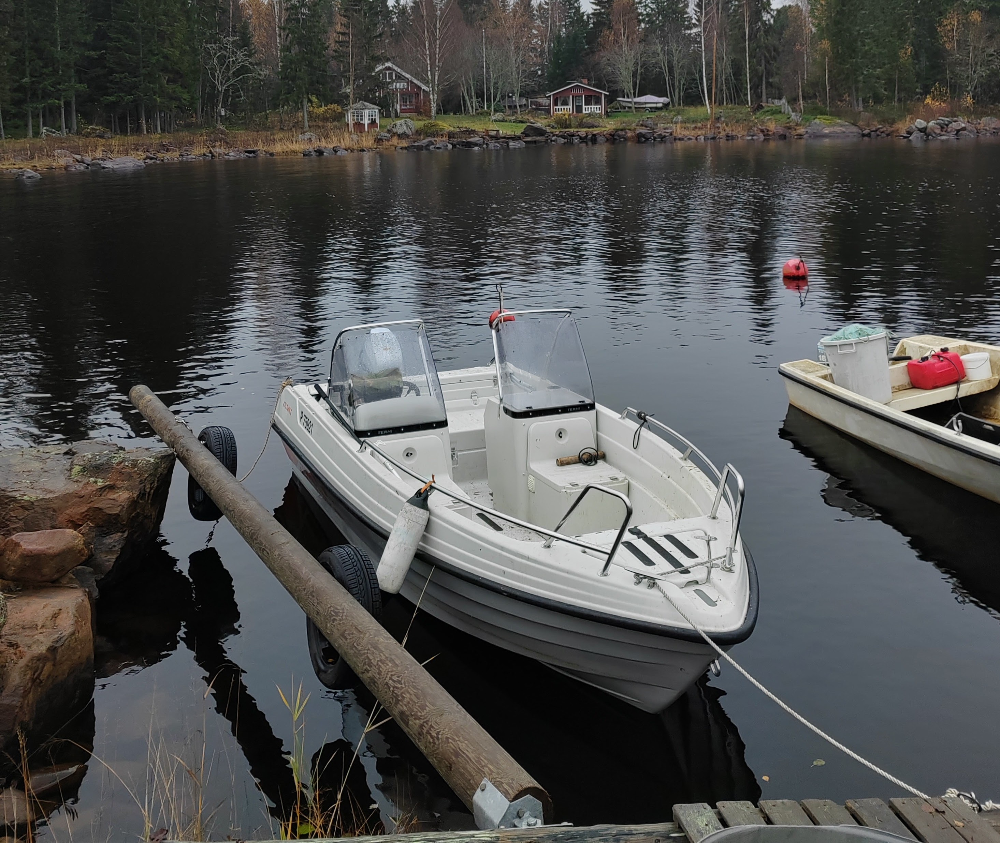

Moottorivene
10 000€
Tällä sivulla kerromme Terhistä. Meidän 475 Twin C-mallin moottoriveneestä. Kyseessä on kansirakenteeltaan avoin, lujitemuovinen, yksirunkoinen sekä kauniin valkoinen menopeli. Kyytiin mahtuu viisi henkilöä ja vene kulkee bensiinillä


Tekniset tiedot
Valmistusvuosi: 2017
Ensimmäinen käyttöönottopäivä: 14.4.2020
Rungon pituus: 4,75m
Levein kohta: 1,85m
Paino: 370,00kg
Kysy lisää tästä veneestä